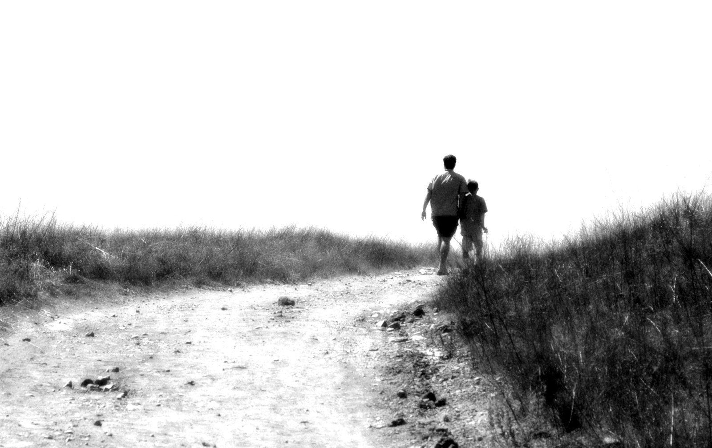

Pecado
Lyrics
Desde pequeno no strugle para ser respeitado
Olhavam para mim (yha) o meu pai cometeu pecado
Mãe presente pai andava em todo o lado
Deu a conhecer ao miúdo o mercado
Familia viu e avisou para ter cuidado
Menino ouviu e já saiu aleijado
Erraste e falhaste como pai e marido
Entraste e mataste ficaste
sem abrigo
Traição é má, e está em todo o lado
Menino já te disse para teres cuidado
Mas ele aprendeu com os erros do cota
Sejam fieis n façam das miúdas chacota
E Por isso meu pai, eu peço-te desculpa
Se desde
pequeno achei que era tua a culpa
Olhava para ti via o meu herói
mal eu sabia que tu eras fuckboy
Muitos anos passaram
Esta tudo diferente
Amigos dispersaram
Estou a ficar doente
O tempo n pára
E há de me apanhar
diz me na cara
Se queres ficar
Muitos bazaram
Mas os real bros stay
Poucos entraram
eu só amo a minha mãe
Em terra de cego
Quem tem olho é rei
Vim tentar a minha sorte
O meu legado espalharei
Desde pequeno no strugle para ser respeitado
Olhavam para mim (yha) o meu pai cometeu pecado
Mãe presente pai andava em todo o lado
Deu a conhecer ao miúdo o mercado
Familia viu e avisou para ter cuidado
Menino ouviu e já saiu aleijado
Juntos edificados
tu és forte
Juntos em abraços
lutaremos contra a morte
Ficamos onde estamos
livres e seguros
Indo para onde vamos
Sempre em Apuros
Fugindo da maldade
E falta de realidade
sempre com a dificuldade
De destruir a desigualdade
E por isso meu pai
Podes voltar para mim
Traz os teus problemas
Nós estamos juntos até ao fim
Muitos anos passaram
Esta tudo diferente
Amigos dispersaram
Eu estou a ficar doente